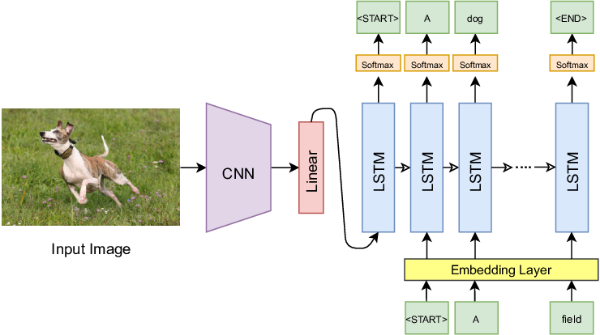
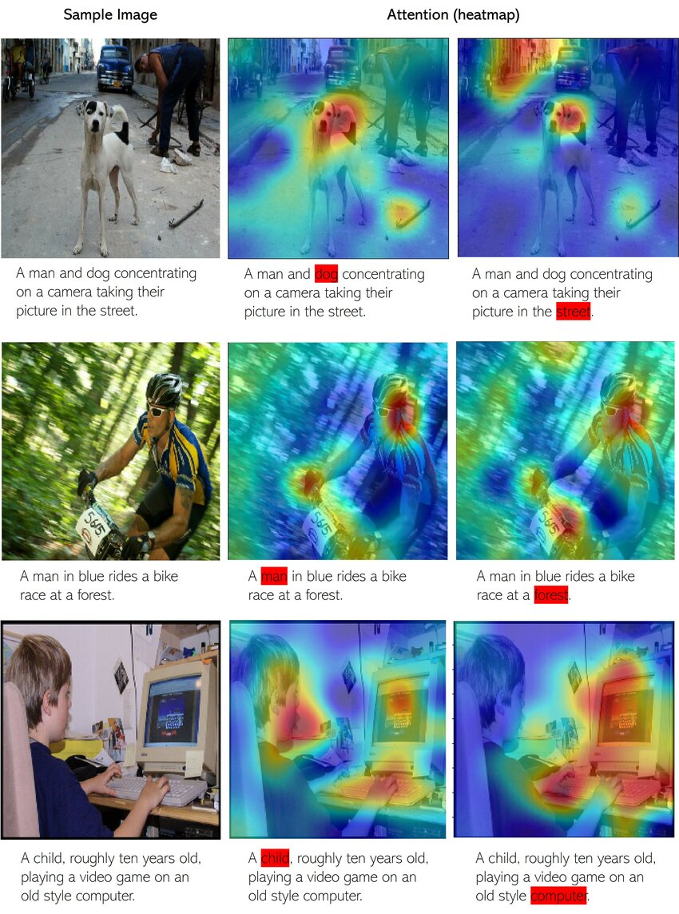
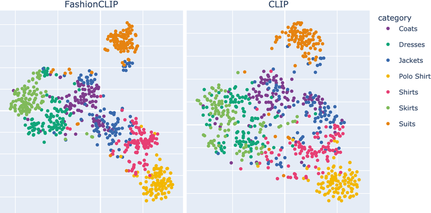
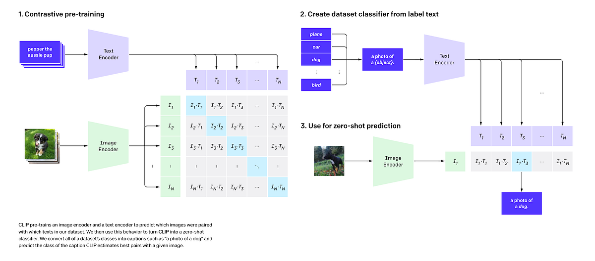
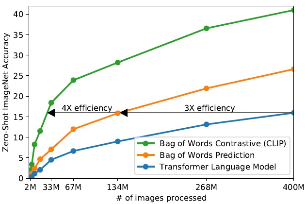
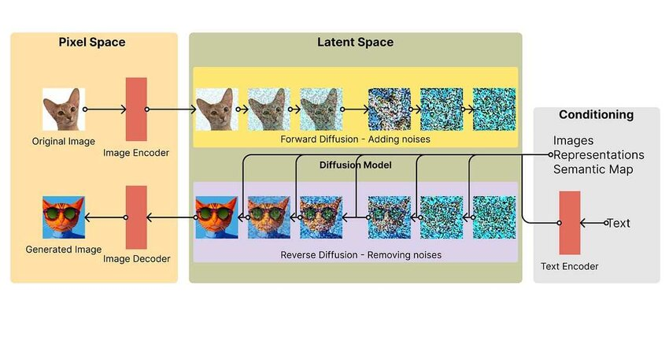

Lesson 8: From Vision–Language Models to CLIP
Learning Objectives
- Understand the challenge of connecting images and language.
- Trace the evolution from CNN+RNN captioning to modern CLIP.
- Explain contrastive learning and why it enables zero-shot transfer.
- Use CLIP for image classification, retrieval, and multimodal tasks.
The Original Problem
Teaching machines to understand both images and language.
digraph vision_language {
rankdir=LR;
node [fontsize=11, shape=box, style=rounded];
img [label="🖼️ Image\n(pixels)", shape=box];
vision [label="Visual\nUnderstanding"];
text [label="📝 Text\n(tokens)", shape=box];
lang [label="Language\nGeneration"];
q [label="???"];
img -> vision;
vision -> q;
text -> lang;
lang -> q;
}
- Visual understanding: What objects, scenes, actions are in the image?
- Language generation: How do we describe it in natural language?
- The hard part: Bridging two very different modalities!
Why Is This Hard?
Images and text live in completely different spaces:
Images
- Dense pixel grids (e.g., 224×224×3)
- Continuous values (0–255)
- Spatial relationships matter
- No discrete vocabulary
Text
- Discrete tokens (words/subwords)
- Finite vocabulary (~30K–100K)
- Sequential order matters
- Highly compositional
Key insight: We need a way to map both modalities into a shared representation space.
Classical Image Captioning
The dominant paradigm before CLIP: CNN encoder + RNN decoder.
digraph captioning {
rankdir=LR;
node [fontsize=14, shape=box, style=rounded, width=1.5, height=0.8];
edge [penwidth=2];
graph [pad="0.5", nodesep="0.8", ranksep="1.2"];
img [label="Image\n224×224×3"];
cnn [label="CNN\n(ResNet/VGG)"];
feat [label="Feature Vector\n2048-d"];
rnn [label="RNN/LSTM\nDecoder"];
cap [label="Caption\n\"A cat sitting\non a mat\""];
img -> cnn -> feat -> rnn -> cap;
}
- Image encoder: Pre-trained CNN extracts visual features.
- Text decoder: RNN/LSTM generates words one at a time.
- Training: Supervised on (image, caption) pairs.
Show and Tell (2015)
Google's influential image captioning model.
# Simplified PyTorch-style pseudocode
class ShowAndTell(nn.Module):
def __init__(self, embed_dim, hidden_dim, vocab_size):
self.cnn = models.resnet50(pretrained=True)
self.cnn.fc = nn.Linear(2048, embed_dim) # project to embed
self.lstm = nn.LSTM(embed_dim, hidden_dim, batch_first=True)
self.fc_out = nn.Linear(hidden_dim, vocab_size)
def forward(self, image, captions):
# Encode image → single vector
img_features = self.cnn(image) # (batch, embed_dim)
# Decode caption word by word
embeddings = self.embed(captions) # (batch, seq_len, embed_dim)
lstm_out, _ = self.lstm(embeddings, img_features)
return self.fc_out(lstm_out)Show and Tell: Architecture Diagram
The CNN (e.g., GoogLeNet/VGG) extracts a fixed-size feature vector from the image, which initializes the LSTM hidden state. The LSTM then generates the caption word by word.
Show, Attend and Tell (2015)
Added visual attention — the decoder can focus on different image regions.
digraph attend_tell {
rankdir=LR;
node [fontsize=11, shape=box, style=rounded];
img [label="Image"];
cnn [label="CNN\n(no pooling)"];
grid [label="Spatial Features\n14×14×512"];
attn [label="Attention\nMechanism"];
context [label="Context c_t"];
lstm [label="LSTM"];
word [label="Next Word"];
img -> cnn -> grid -> attn;
attn -> context [label="weighted sum"];
context -> lstm -> word;
lstm -> attn [style=dashed, color=blue, constraint=false, xlabel="h_{t-1}"];
}
Key idea: The LSTM's previous hidden state tells attention "what to look for". Attention returns a context vector that helps predict the next word.
Visual Attention in Action
When generating each word, the model learns to focus on the relevant image regions. White/bright areas show where the model "looks" when generating that particular word.
The Recurrent Loop: LSTM ↔ Attention
Attention and LSTM work together in a recurrent loop at each timestep:
digraph recurrent_loop {
rankdir=LR;
node [fontsize=11, shape=box, style=rounded];
newrank=true;
subgraph cluster_fixed {
label="Computed Once";
style=filled; fillcolor="#fff3e0";
features [label="Image Features\n(L regions)"];
}
subgraph cluster_recurrent {
label="Recurrent Loop (repeated for each word)";
style=filled; fillcolor="#e3f2fd";
color="#1976d2"; penwidth=2;
h_prev [label="h_{t-1}", style=filled, fillcolor="#bbdefb"];
attn [label="Attention"];
context [label="Context c_t"];
word [label="Word w_t"];
lstm [label="LSTM"];
h_next [label="h_t", style=filled, fillcolor="#c8e6c9"];
output [label="Predict\nNext Word"];
{rank=same; h_prev; word}
{rank=same; attn}
{rank=same; context}
{rank=same; lstm}
{rank=same; h_next; output}
}
features -> attn;
h_prev -> attn;
word -> lstm;
attn -> context -> lstm;
h_prev -> lstm [style=dashed, label="state"];
lstm -> h_next;
h_next -> output;
h_next -> h_prev [style=dashed, color="#1976d2", penwidth=2, constraint=false, xlabel="loop back"];
}
Blue box: Repeated for each word. Orange box: Computed once from image.
Timeline of One Decoding Step
At timestep \(t\), generating word \(t+1\):
The loop continues until we generate [END] token or max length.
Inside the Attention Mechanism
What happens inside the attention block? Three key steps:
digraph attention_detail {
rankdir=LR;
node [fontsize=12, shape=box, style=rounded];
subgraph cluster_input {
label="Inputs";
style=filled; fillcolor="#e3f2fd";
features [label="Image Features\na₁, a₂, ..., aₗ\n(L regions)"];
hidden [label="Previous State\nh_{t-1}"];
}
subgraph cluster_attention {
label="Attention Computation";
style=filled; fillcolor="#fff3e0";
score [label="1. Score\nFunction"];
softmax [label="2. Softmax\nα = softmax(e)"];
weighted [label="3. Weighted\nSum"];
}
context [label="Context\nVector c_t", style=filled, fillcolor="#e8f5e9"];
features -> score;
hidden -> score;
score -> softmax -> weighted;
features -> weighted;
weighted -> context;
}
Step 1: Compute Attention Scores
For each image region, compute a "relevance score" given the current decoder state:
- \(a_i\): Feature vector for image region \(i\) (from CNN)
- \(h_{t-1}\): Previous LSTM hidden state (what we've generated so far)
- \(e_{ti}\): Scalar score — "how relevant is region \(i\) for generating word \(t\)?"
# Common scoring function: MLP
def attention_score(a_i, h_t):
# Combine image feature and hidden state
combined = torch.tanh(W_a @ a_i + W_h @ h_t + b)
# Project to scalar score
e = v.T @ combined # scalar
return eStep 2: Softmax → Attention Weights
Convert scores to a probability distribution over image regions:
Properties of \(\alpha\):
- \(\alpha_{ti} \in [0, 1]\) for all regions
- \(\sum_{i=1}^{L} \alpha_{ti} = 1\) (sums to 1)
- Higher score → higher weight
Example (L=4 regions):
Scores e: [2.1, 0.5, 0.8, -0.3]
↓ softmax
Weights α: [0.62, 0.13, 0.17, 0.08]
↑
Region 1 gets 62% attention
Step 3: Weighted Sum → Context Vector
Combine image features using attention weights:
- \(c_t\): Context vector — a "soft selection" of relevant image information
- Regions with high \(\alpha\) contribute more to the context
- This context is fed to the LSTM along with the previous word
# Weighted sum of image features
def compute_context(features, alpha):
"""
features: (L, D) - L regions, D-dimensional each
alpha: (L,) - attention weights (sum to 1)
"""
context = (alpha.unsqueeze(1) * features).sum(dim=0) # (D,)
return contextAttention: The Complete Picture
Putting it all together for one decoding step:
class Attention(nn.Module):
def __init__(self, feature_dim, hidden_dim, attention_dim):
self.W_a = nn.Linear(feature_dim, attention_dim) # project image features
self.W_h = nn.Linear(hidden_dim, attention_dim) # project hidden state
self.v = nn.Linear(attention_dim, 1) # score to scalar
def forward(self, features, hidden):
# features: (batch, L, feature_dim) — L image regions
# hidden: (batch, hidden_dim) — LSTM state
# Step 1: Compute scores for each region
scores = self.v(torch.tanh(
self.W_a(features) + self.W_h(hidden).unsqueeze(1)
)) # (batch, L, 1)
# Step 2: Softmax → attention weights
alpha = F.softmax(scores.squeeze(2), dim=1) # (batch, L)
# Step 3: Weighted sum → context vector
context = (alpha.unsqueeze(2) * features).sum(dim=1) # (batch, feature_dim)
return context, alphaHow Is Attention Trained?
The attention mechanism is trained end-to-end with backpropagation:
digraph training {
rankdir=LR;
node [fontsize=11, shape=box, style=rounded];
edge [fontsize=9];
img [label="Image"];
cnn [label="CNN"];
attn [label="Attention\n(W_a, W_h, v)"];
lstm [label="LSTM"];
output [label="Softmax\nover vocab"];
loss [label="Cross-Entropy\nLoss", style=filled, fillcolor="#ffcdd2"];
target [label="Ground Truth\nCaption"];
img -> cnn -> attn -> lstm -> output -> loss;
target -> loss;
loss -> output -> lstm -> attn -> cnn [style=dashed, color=red, label="gradients"];
}
Key insight: All operations (linear layers, tanh, softmax, weighted sum) are differentiable!
Training Attention: Step by Step
The training loop for image captioning with attention:
for images, captions in dataloader:
# 1. Extract image features (L regions)
features = cnn(images) # (batch, L, feature_dim)
# 2. Initialize LSTM hidden state
hidden = init_hidden(features.mean(dim=1))
loss = 0
for t in range(caption_length):
# 3. Compute attention weights
context, alpha = attention(features, hidden)
# 4. LSTM step: input = [previous word embedding, context]
input_t = torch.cat([word_embed(captions[:, t]), context], dim=1)
hidden = lstm(input_t, hidden)
# 5. Predict next word
logits = output_layer(hidden) # (batch, vocab_size)
# 6. Cross-entropy loss against ground truth
loss += F.cross_entropy(logits, captions[:, t+1])
# 7. Backpropagate through everything (including attention!)
loss.backward()
optimizer.step()What Does Backprop Through Attention Look Like?
Gradients flow back through the attention computation:
- Loss gradient \(\frac{\partial L}{\partial c_t}\) comes from the LSTM/output layer
- Backprop through weighted sum: \(\frac{\partial L}{\partial \alpha_i} = \frac{\partial L}{\partial c_t} \cdot a_i\)
- Backprop through softmax: gradients flow to scores \(e_i\)
- Backprop through score function: updates \(W_a, W_h, v\)
Result: The model learns which regions to attend to by minimizing caption prediction loss!
Attention Learns Without Supervision
We never tell the model "look here for this word" — it discovers this on its own!
Training signal:
- Only supervision: (image, caption) pairs
- No bounding boxes
- No region-word alignments
What attention learns:
- Look at dog when saying "dog"
- Look at grass when saying "field"
- Emerges from optimizing caption loss!
Why Attention Works
Attention solves the "information bottleneck" problem:
Without Attention
- Entire image → single vector
- All info must fit in one embedding
- Same context for every word
- Hard to describe complex scenes
With Attention
- Keep all L region features
- Dynamically select what's relevant
- Different context for each word
- "Look" at bird for "bird", water for "water"
This same idea powers Transformers! (Lesson 7)
Two Ways to Apply Attention Weights
We've computed attention weights \(\alpha_i\) for each region. But how do we use them?
The "Show, Attend and Tell" paper explored two approaches:
Soft Attention
Weighted average of all regions:
- All regions contribute (with weights)
- ✅ Fully differentiable
- ✅ Train with standard backprop
- Smoother, more stable training
Hard Attention
Sample ONE region:
- Only one region contributes
- ❌ NOT differentiable (sampling)
- ⚠️ Needs REINFORCE algorithm
- More interpretable but noisy
Soft vs Hard: Which One Is Used?
In practice, soft attention is almost always used. Here's why:
| Soft Attention | Hard Attention | |
|---|---|---|
| Training | Standard backprop ✅ | REINFORCE (high variance) ⚠️ |
| Gradients | Smooth, stable | Noisy, needs baselines |
| Computation | Deterministic | Stochastic (need multiple samples) |
| Interpretation | "Soft" focus on multiple regions | "Hard" focus on one region |
Attention Over Image Regions
The model learns where to look when generating each word:
"A bird flying over water"
Image Grid (14×14): ┌───┬───┬───┬───┐ │ │ │ ▓ │ ▓ │ ← high α for │ │ │ ▓ │ ▓ │ "bird" region ├───┼───┼───┼───┤ │ │ │ │ │ │ │ │ │ │ ├───┼───┼───┼───┤ │ ░ │ ░ │ ░ │ ░ │ ← high α for │ ░ │ ░ │ ░ │ ░ │ "water" region └───┴───┴───┴───┘
Soft attention in action:
- When generating "bird": α is high for bird regions
- When generating "water": α shifts to water regions
- All regions contribute, but with different weights
This same idea powers Transformers! (Lesson 7)
Limitations of Task-Specific Models
- Fixed vocabulary: Can only generate words seen in training data.
- Narrow task: Trained for captioning only — can't do retrieval, VQA, etc.
- Poor generalization: Struggles with novel compositions ("a cat riding a skateboard").
- No semantic alignment: Image and text spaces are separate — connected only through the decoder.
- Expensive labels: Requires manually annotated (image, caption) pairs.
Question: Can we learn a more general connection between vision and language?
The Paradigm Shift
Researchers changed the question they were asking:
Old Question
"Can we generate captions for images?"
→ Task-specific, narrow
New Question
"Can we learn a shared meaning space for images and text?"
→ General-purpose, transferable
This shift from task-specific training to representation learning leads directly to CLIP.
What Is a Shared Embedding Space?
The goal: map images and text to the same vector space.
digraph shared_space {
rankdir=LR;
node [fontsize=10, shape=box, style=rounded];
subgraph cluster_input {
label="Inputs";
style=filled; fillcolor="#f5f5f5";
img1 [label="🐱 cat photo"];
img2 [label="🐕 dog photo"];
txt1 [label="\"a cat\""];
txt2 [label="\"a dog\""];
}
subgraph cluster_space {
label="Shared Embedding Space";
style=filled; fillcolor="#e8f4f8";
node [shape=circle, width=0.3];
e1 [label="●"];
e2 [label="●"];
e3 [label="○"];
e4 [label="○"];
}
img1 -> e1 [label="encode"];
txt1 -> e3 [label="encode"];
img2 -> e2 [label="encode"];
txt2 -> e4 [label="encode"];
}
- Cat image 🐱 and text "a cat" should be close in the space.
- Cat image 🐱 and text "a dog" should be far apart.
- We can now compare any image to any text via distance/similarity!
Visualizing the Shared Embedding Space
t-SNE projection of CLIP embeddings. Images and their corresponding text descriptions cluster together in the shared space. Different semantic categories form distinct clusters.
Why a Shared Space Is Powerful
With a shared embedding space, many tasks become simple:
| Task | How It Works |
|---|---|
| Image → Text | Find text embeddings closest to image embedding |
| Text → Image | Find image embeddings closest to text embedding |
| Classification | Compare image to text descriptions of each class |
| Similarity | Directly measure distance between any image and text |
CLIP: The Core Idea
Contrastive Language–Image Pretraining (OpenAI, 2021)
CLIP learns: A shared embedding space where matching image–text pairs are close, and non-matching pairs are far apart.
digraph clip_core {
rankdir=TB;
node [fontsize=10, shape=box, style=rounded];
img [label="Image"];
txt [label="Text"];
img_enc [label="Image Encoder\n(ResNet/ViT)"];
txt_enc [label="Text Encoder\n(Transformer)"];
img_emb [label="Image\nEmbedding", shape=ellipse];
txt_emb [label="Text\nEmbedding", shape=ellipse];
sim [label="Cosine\nSimilarity", shape=diamond];
img -> img_enc -> img_emb;
txt -> txt_enc -> txt_emb;
img_emb -> sim;
txt_emb -> sim;
}
CLIP Architecture Overview

Left: Image and text encoders project inputs to a shared embedding space.
Right: The N×N similarity matrix where diagonal entries (matching pairs) are maximized during training.
CLIP Architecture: Dual Encoders
CLIP uses two separate encoders that project to the same space:
Image Encoder
- Options: ResNet-50 or Vision Transformer (ViT)
- Input: Image (224×224 or larger)
- Output: 512-d or 768-d embedding
- ViT-L/14 is the strongest variant
Text Encoder
- Architecture: 12-layer Transformer
- Input: Tokenized text (max 77 tokens)
- Output: Same dimension as image encoder
- Uses [EOS] token embedding as output
Critical: Both encoders output vectors of the same dimension!
CLIP Training Data
CLIP was trained on a massive dataset of image-text pairs:
- Weakly supervised: Alt-text, captions, titles — not manually annotated.
- Diverse: Covers a huge range of concepts, objects, scenes, activities.
- Noisy: Not all pairs are perfect matches — but scale compensates!
| Dataset | Size | Type |
|---|---|---|
| COCO Captions | ~330K images | Curated |
| Visual Genome | ~100K images | Curated |
| CLIP WIT | ~400M pairs | Web-scraped |
1000× more data than previous vision-language datasets!
Contrastive Learning: The Intuition
Learn by comparing: push similar things together, dissimilar things apart.
Before Training
Embedding Space:
○ img1
●txt1 ●txt2
○ img2
○ img3
●txt3
(scattered randomly)
After Training
Embedding Space:
○● (img1, txt1)
○● (img2, txt2)
○● (img3, txt3)
(matching pairs cluster)
No labels needed! The pairing itself provides the supervision signal.
Batch-Based Contrastive Training
In each training batch of \(N\) image-text pairs:
digraph batch {
rankdir=LR;
node [fontsize=10, shape=box, style=rounded];
subgraph cluster_batch {
label="Batch of N pairs";
style=filled; fillcolor="#f5f5f5";
i1 [label="img₁"]; t1 [label="txt₁"];
i2 [label="img₂"]; t2 [label="txt₂"];
i3 [label="img₃"]; t3 [label="txt₃"];
iN [label="img_N"]; tN [label="txt_N"];
}
matrix [label="N×N\nSimilarity\nMatrix", shape=box3d];
i1 -> matrix; i2 -> matrix; i3 -> matrix; iN -> matrix;
t1 -> matrix; t2 -> matrix; t3 -> matrix; tN -> matrix;
}
- Positive pairs: (img₁, txt₁), (img₂, txt₂), ... on the diagonal
- Negative pairs: All other combinations (img₁, txt₂), (img₂, txt₁), etc.
- With batch size \(N\), we get \(N\) positives and \(N^2 - N\) negatives!
The Contrastive Matrix Visualized

For a batch of N image-text pairs, we compute an N×N matrix of cosine similarities. The training objective maximizes the diagonal (correct pairs) while minimizing off-diagonal entries (incorrect pairs).
Cosine Similarity
CLIP measures similarity using normalized dot products:
- Range: \([-1, +1]\)
- +1: Identical direction (perfect match)
- 0: Orthogonal (unrelated)
- −1: Opposite direction (anti-correlated)
# PyTorch: cosine similarity
def cosine_similarity(I, T):
I_norm = I / I.norm(dim=-1, keepdim=True)
T_norm = T / T.norm(dim=-1, keepdim=True)
return I_norm @ T_norm.T # (N, N) similarity matrixThe Similarity Matrix
For a batch, we compute all pairwise similarities:
Similarity Matrix (N=4):
txt₁ txt₂ txt₃ txt₄
┌─────────────────────────┐
img₁ │ 0.92 0.15 0.08 0.21 │
img₂ │ 0.11 0.89 0.23 0.05 │
img₃ │ 0.18 0.12 0.95 0.14 │
img₄ │ 0.09 0.22 0.17 0.88 │
└─────────────────────────┘
Diagonal = correct pairs ✓
Training objective:
- Maximize diagonal (matching pairs)
- Minimize off-diagonal (non-matching)
- This is a classification problem!
InfoNCE Loss (Contrastive Loss)
The loss function that makes contrastive learning work:
- \(\tau\) (tau): Temperature parameter (learned, typically ~0.07)
- Numerator: Similarity of correct pair
- Denominator: Sum over all pairs in batch
- Interpretation: Cross-entropy loss treating it as N-way classification!
Key insight: Each image must "pick" its correct text from N choices (and vice versa).
Symmetric Loss
CLIP uses a symmetric loss — both directions matter:
Image → Text:
For each image, classify which text matches
Rows of similarity matrix
Text → Image:
For each text, classify which image matches
Columns of similarity matrix
This ensures embeddings work well for both retrieval directions.
CLIP Training: Code
import torch
import torch.nn.functional as F
def clip_loss(image_embeddings, text_embeddings, temperature=0.07):
"""
Compute CLIP contrastive loss.
image_embeddings: (N, D) normalized image vectors
text_embeddings: (N, D) normalized text vectors
"""
# Compute similarity matrix: (N, N)
logits = (image_embeddings @ text_embeddings.T) / temperature
# Labels: diagonal entries are correct pairs
labels = torch.arange(len(logits), device=logits.device)
# Symmetric cross-entropy loss
loss_i2t = F.cross_entropy(logits, labels) # image → text
loss_t2i = F.cross_entropy(logits.T, labels) # text → image
return (loss_i2t + loss_t2i) / 2That's it! The simplicity of the loss is part of what makes CLIP so effective.
Why Contrastive Learning Is So Efficient
- Bag of Words Contrastive (green): Up to 4× more efficient than transformers
- Bag of Words Prediction (orange): ~3× efficiency gain
- Transformer LM (blue): Baseline — slower to train
Key insight: Contrastive objectives are much more sample-efficient than generative (prediction) objectives. CLIP gets more "learning" per image-text pair!
Why Does Temperature (\(\tau\)) Matter?
Temperature controls the "sharpness" of the softmax distribution:
High \(\tau\) (e.g., 1.0):
- Softer distribution
- Less confident predictions
- Easier gradients early in training
Low \(\tau\) (e.g., 0.01):
- Sharper distribution
- More confident predictions
- Harder negatives, better separation
CLIP learns \(\tau\) as a parameter, typically converging to ~0.07.
# Temperature as learnable parameter
self.logit_scale = nn.Parameter(torch.ones([]) * np.log(1 / 0.07))
logits = logits * self.logit_scale.exp()Zero-Shot Image Classification
CLIP can classify images into any categories without training!
digraph zero_shot {
rankdir=TB;
node [fontsize=10, shape=box, style=rounded];
img [label="🐱 Test Image"];
img_enc [label="Image\nEncoder"];
img_emb [label="Image\nEmbedding", shape=ellipse];
t1 [label="\"a photo of a cat\""];
t2 [label="\"a photo of a dog\""];
t3 [label="\"a photo of a car\""];
txt_enc [label="Text\nEncoder"];
compare [label="Cosine\nSimilarity", shape=diamond];
pred [label="Prediction:\ncat (0.92)"];
img -> img_enc -> img_emb -> compare;
t1 -> txt_enc -> compare;
t2 -> txt_enc -> compare;
t3 -> txt_enc -> compare;
compare -> pred;
}
No training on these classes! Just encode and compare.
Zero-Shot Classification: Visual Flow

The image is encoded once, then compared against text embeddings of all possible class labels. The class with highest cosine similarity is selected as the prediction — no task-specific training required!
Zero-Shot Classification: Code
import clip
import torch
from PIL import Image
# Load CLIP model
model, preprocess = clip.load("ViT-B/32", device="cuda")
# Prepare image
image = preprocess(Image.open("cat.jpg")).unsqueeze(0).to("cuda")
# Define class prompts
classes = ["a photo of a cat", "a photo of a dog", "a photo of a bird"]
text = clip.tokenize(classes).to("cuda")
# Encode both modalities
with torch.no_grad():
image_features = model.encode_image(image)
text_features = model.encode_text(text)
# Normalize and compute similarity
image_features /= image_features.norm(dim=-1, keepdim=True)
text_features /= text_features.norm(dim=-1, keepdim=True)
similarity = (100.0 * image_features @ text_features.T).softmax(dim=-1)
print(f"Predictions: {similarity[0]}") # [0.92, 0.05, 0.03]Prompt Engineering for CLIP
The text prompts matter! Better prompts = better zero-shot accuracy.
| Simple Prompt | Better Prompt |
|---|---|
| "cat" | "a photo of a cat" |
| "airplane" | "a photo of an airplane, a type of aircraft" |
| "beach" | "a photo of a beach, with sand and ocean" |
# Ensemble of prompts for "cat"
prompts = [
"a photo of a cat",
"a photograph of a cat",
"an image of a cat",
"a picture of a cat",
]
text_embeddings = [model.encode_text(clip.tokenize(p)) for p in prompts]
cat_embedding = torch.stack(text_embeddings).mean(dim=0)Image-Text Retrieval
Given an image, find matching text (or vice versa):
Image → Text
# Find best caption for image
image_emb = model.encode_image(image)
text_embs = model.encode_text(all_texts)
# Rank by similarity
sims = image_emb @ text_embs.T
best_idx = sims.argmax()
print(all_texts[best_idx])Text → Image
# Find best image for query
text_emb = model.encode_text(query)
image_embs = model.encode_image(all_images)
# Rank by similarity
sims = text_emb @ image_embs.T
best_idx = sims.argmax()
show(all_images[best_idx])This powers image search engines, visual databases, and content moderation!
What CLIP Does NOT Do
- No text generation: Cannot write captions from scratch.
- No image generation: Cannot create pixels from text.
- No decoder: Only outputs embedding vectors.
- No token-by-token: No autoregressive generation.
It can score how well an image matches text, but it doesn't create either.
CLIP Zero-Shot vs Supervised
CLIP achieves strong performance without task-specific training:
| Dataset | ResNet-50 (supervised) | CLIP ViT-L/14 (zero-shot) |
|---|---|---|
| ImageNet | 76.1% | 75.5% |
| CIFAR-10 | 95.6% | 95.6% |
| Food-101 | 72.8% | 92.9% |
| STL-10 | 96.3% | 99.3% |
Key insight: CLIP matches or beats supervised models on many datasets — without seeing a single example from those datasets during training!
CLIP as a Foundation
CLIP's aligned embeddings enable many downstream systems:
digraph clip_ecosystem {
rankdir=TB;
node [fontsize=10, shape=box, style=rounded];
clip [label="CLIP\nEmbeddings", shape=ellipse, style=filled, fillcolor="#e8f4f8"];
caption [label="+ Language Model\n→ Image Captioning"];
diffusion [label="+ Diffusion Model\n→ Text-to-Image"];
vqa [label="+ QA Head\n→ Visual QA"];
seg [label="+ Decoder\n→ Segmentation"];
clip -> caption;
clip -> diffusion;
clip -> vqa;
clip -> seg;
}
CLIP provides the vision-language bridge; other models provide the generation capabilities.
Modern Image Captioning with CLIP
Use CLIP as the visual encoder, feed into a language model:
digraph clip_caption {
rankdir=LR;
node [fontsize=12, shape=box, style=rounded, width=1.3, height=0.7];
edge [penwidth=1.5];
graph [nodesep=0.8, ranksep=1.0];
img [label="Image"];
clip [label="CLIP\nImage Encoder", style="filled,rounded", fillcolor="#e3f2fd"];
proj [label="Projection\nLayer"];
lm [label="Language Model\n(GPT-2, OPT, ...)", style="filled,rounded", fillcolor="#fff3e0"];
cap [label="Caption:\n\"A tabby cat\nsitting on...\"", style="filled,rounded", fillcolor="#e8f5e9"];
img -> clip -> proj -> lm -> cap;
}
CLIP's role:
- Extract semantic visual features
- Pretrained contrastive loss
LM's role:
- Generate fluent text
- Cross-entropy loss on captions
This is how models like BLIP, Flamingo, LLaVA work!
Text-to-Image with CLIP Guidance
Early text-to-image used CLIP to guide diffusion models:
digraph clip_guidance {
rankdir=LR;
node [fontsize=11, shape=box, style=rounded];
subgraph cluster_text {
label="Text Path";
style=filled; fillcolor="#e3f2fd";
prompt [label="Prompt\n\"a cat wearing\na tiny hat\""];
clip_txt [label="CLIP Text\nEncoder"];
txt_emb [label="Text Emb", shape=ellipse];
}
subgraph cluster_image {
label="Image Generation Path";
style=filled; fillcolor="#fff3e0";
noise [label="Random\nNoise"];
diffusion [label="Diffusion\nModel"];
img [label="Generated\nImage"];
clip_img [label="CLIP Image\nEncoder"];
img_emb [label="Image Emb", shape=ellipse];
}
sim [label="Similarity", shape=diamond, style=filled, fillcolor="#e8f5e9"];
prompt -> clip_txt -> txt_emb;
noise -> diffusion -> img -> clip_img -> img_emb;
txt_emb -> sim;
img_emb -> sim;
sim -> diffusion [style=dashed, color=red, label="gradient\n(guide)"];
}
CLIP is used twice: encode prompt, evaluate generated image, guide optimization!
Stable Diffusion Architecture
Stable Diffusion uses the CLIP text encoder to convert prompts into embeddings, which guide the diffusion process via cross-attention in the U-Net. The model operates in a compressed latent space for efficiency.
Latent Diffusion Model
.webp)
The latent diffusion approach: images are encoded to a smaller latent space, diffusion happens there (faster!), then decoded back to pixels. CLIP text embeddings condition the denoising process.
CLIP in Modern Text-to-Image
DALL·E 2, Stable Diffusion, Midjourney all build on CLIP ideas:
| Model | CLIP's Role |
|---|---|
| DALL·E 2 | Uses CLIP image embeddings as conditioning for diffusion |
| Stable Diffusion | Uses CLIP text encoder (frozen) to condition generation |
| Imagen | Uses T5 text encoder instead of CLIP |
CLIP also remains crucial for filtering, ranking, and safety in production systems.
The Vision-Language Timeline
Using CLIP: Quick Start
# Install: pip install git+https://github.com/openai/CLIP.git
import clip
import torch
from PIL import Image
# Load model (downloads on first run)
device = "cuda" if torch.cuda.is_available() else "cpu"
model, preprocess = clip.load("ViT-B/32", device=device)
# Encode an image
image = preprocess(Image.open("photo.jpg")).unsqueeze(0).to(device)
image_features = model.encode_image(image)
# Encode text
text = clip.tokenize(["a dog", "a cat", "a bird"]).to(device)
text_features = model.encode_text(text)
# Compute similarity
image_features /= image_features.norm(dim=-1, keepdim=True)
text_features /= text_features.norm(dim=-1, keepdim=True)
similarity = (100.0 * image_features @ text_features.T).softmax(dim=-1)
print("Label probs:", similarity) # Probability for each classAvailable CLIP Models
OpenAI released several CLIP variants:
| Model | Image Encoder | Embedding Dim | Speed | Accuracy |
|---|---|---|---|---|
| RN50 | ResNet-50 | 1024 | Fast | Good |
| RN101 | ResNet-101 | 512 | Medium | Better |
| ViT-B/32 | ViT-Base, 32px patches | 512 | Fast | Good |
| ViT-B/16 | ViT-Base, 16px patches | 512 | Medium | Better |
| ViT-L/14 | ViT-Large, 14px patches | 768 | Slow | Best |
# List available models
print(clip.available_models())
# ['RN50', 'RN101', 'RN50x4', 'RN50x16', 'RN50x64',
# 'ViT-B/32', 'ViT-B/16', 'ViT-L/14', 'ViT-L/14@336px']Hands-On / Homework Ideas
- Zero-shot classification: Classify images from a custom dataset using text prompts.
- Image search: Build a text-to-image retrieval system with a collection of photos.
- Prompt engineering: Experiment with different prompt formats and measure accuracy changes.
- Similarity visualization: Plot CLIP embeddings with t-SNE/UMAP for images and their captions.
- Explore failure cases: Find images that CLIP misclassifies — what patterns emerge?
Key Takeaways
- CLIP is not a generator — it produces embeddings, not text or images.
- Contrastive learning is the core innovation — match pairs, push apart non-pairs.
- Shared embedding space enables zero-shot transfer to new tasks.
- Scale matters — 400M image-text pairs from the web.
- CLIP enables ecosystems — captioning, generation, VQA all build on CLIP.
Further Reading & Resources
- CLIP Paper — "Learning Transferable Visual Models From Natural Language Supervision"
- OpenAI CLIP GitHub — Official implementation
- Hugging Face CLIP — Easy-to-use transformers integration
- CLIP Explained (Yannic Kilcher) — Video walkthrough
- Contrastive Learning Survey — Lilian Weng's deep dive